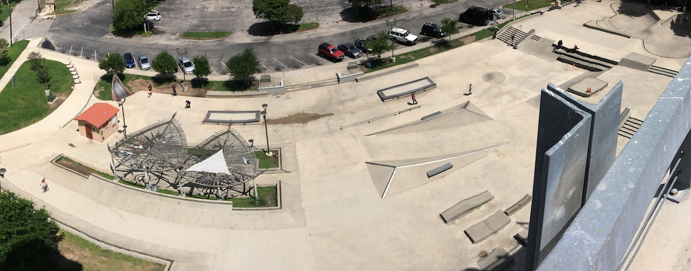
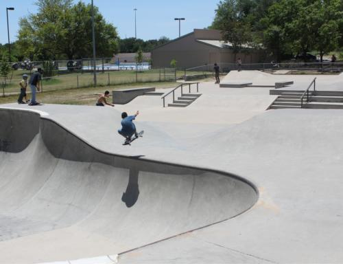

Texas has quite a different skating compared to the two coasts I'm here to explain what it's like here in Central Texas. For starters, skateboarding originated in California, It was a way for surfers to still have fun while on land. From surfing, to pools, to vert, to street, the sport has continually evolved and is forever changing. Skateboarding has actually just passed a milestone and is daubing in the 2020 Olympics, I wonder where it will go next?
HOT, HOT, HOT! The Texas heat is the first thing that comes to mind. As you may know, we are notorious for having 100 degree weather for at least a 1/3 of the year. To this date, April 14, 2020 we've had our first 90 degree day last week and currently are in a 40-60 degree cold front. Texas weather is crazy to say the least, but the one thing you can bet on is the heat. To prepare for the heat stay hydrated and take many breaks. From experience, I remember times when I would be able to skate for the whole entire day (11-4pm roughly). Perhaps this was in the fall when temperatures may have dropped, but now I can't remember the last time I stayed out more than three hours, it's too damn hot!
Much of Austin's skate scene revolves around House, it acts as a meetup spot to take on the day. It also is a oasis for the folks that stay there dusk to dawn. At times it can get PACKED and may seem intemidating, but the more you go the more you understand the flow and figure out slow times. The added bonus to skating House park, Austin’s Premier skate park. It's right next to a giant parking garage which adds a ton of shade depending on the time. You also have No-comply skate shop up the street and let's not forget to mention all the attractions on North Lamar Blvd. Goodwill, thundercloud, Whole Foods and more.
 Maple Davis is one of the first parks that were built in Austin. it's good for street but has definitely seen better days. there's big cracks in the ground in the bowl is kind of oddly shaped regarding the walls. however it's still a pretty buck park then you can throw down some big tricks on some of the rails or stair sets in the middle, just watch out for cracks.The San Marcos (header^) scene is pretty small, I’m and outsider but I see the same people at the skate park a lot. I don't really know too much about their lives or see them at street spots around the college campus near. Some I’ve talked to have either moved to Austin or talk about things that go on there. There are lots of hills so if you’re into bombing hills its great for your next video. All in all, San Marcos is cool, it has little street spots, but I definitely feel like the bus factor is way higher because it's in a smaller town. #skateboardingisnotacrime
Some say the West Coast skate scene is the biggest one out there. Well, no brainer! That's where it originated. So many people skate and it's almost abnormal to not. With so many Pro’s and prodigies coming from out of that state on in-state to show what they've got is hard. In Califoria its very hard to stand out. Some would say that atmosphere is intense regarding how seriously people take it. Here's and example of two skaters jouney going to cali trying to make it big.
John Hill he's one of my favorite skateboarders, he's so easygoing, relatable, and has a nice aesthetic. He's also really good at skateboarding but not on a major brand. One of his earlier videos he explains his journey of him moving all the way from South Carolina could California in hopes to make it big. he got some attention a birdhouse in some other big brands but the thing about skateboarding is you as a person have to be marketable. California has so many Premier parks, spots, people and pros ANYONE can go out to gain more exposure for their self’s. In addition, social media platforms showcase their skills instantly, honestly it just has to click for you and it's very hard to be the “chosen one.” With so many others just like you.
Nonetheless, the core value instilled in skating is how fun it is. If your no longer having fun, you shouldn't be skating. It can draw the fun out if you get caught up in the traditional business side of skating.
Rough ,crusty and stylish are the first words that come to mind. I have family on the East Coast and when I visit them and astounded by the quality of the streets there. They don't even have curbs like in Texas! They just have thick granite slabs on the side of the road. I guess this is for that wintertime ice. It can also be used as a great slappy curb! Another downfall is how many cracks and rocks there are. This is due to water freezing in between the concrete and break apart the bond. The East Coast is more prone to retaining water and freezing more than Texas and California. Essentially, their streets are trash.
Despite the circumstances East Coast skaters are known for their creativity, making DIY's and pushing through the most jagged terrain. East Coasters hit the streets hard even though, They have a lot less to work with compared to California. Some would say “actually skating street and not just skating in the middle of a California school yard” is better. Both are cool, in my opinion, but I have a little more appreciation for East coasters.